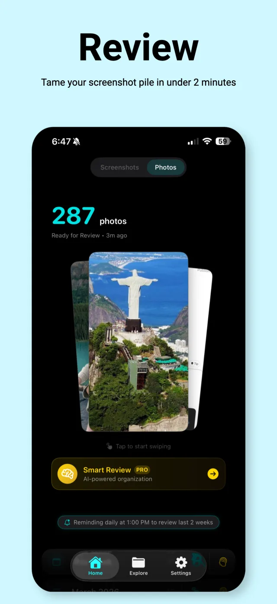
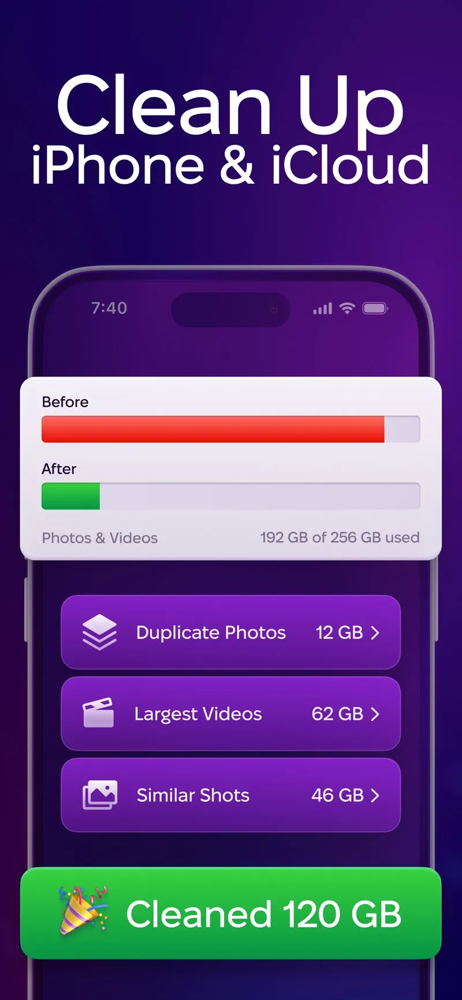

The 5 Best Apps to Clean Up Screenshots on iPhone (2026)
Quick answer: Screenshot Swipe is the best app for cleaning up screenshots specifically, with swipe-to-sort triage plus OCR search, tags, and notes. Swipewipe and Slidebox are better for whole-camera-roll cleanup, CleanMy®Phone wins for duplicates and storage, and Slider is the pick if large videos are your real problem.
Open your Photos app and tap the Screenshots album. For most people that number sits somewhere between 400 and 4,000 — receipts, boarding passes, memes, Wi-Fi passwords, and a hundred things you can no longer identify.
Deleting them one at a time in Photos is slow enough that nobody actually does it. A good cleanup app turns the same job into a couple of minutes of swiping. This roundup compares five of them.
Disclosure: we make Screenshot Swipe, the first app on this list. The ratings below come straight from the App Store API on the day of publishing, and we've been honest about where each competitor beats us.
How did we pick these apps?
Three rules. Each app had to run on a current iPhone with recent updates. Each had to delete through Apple's photo library APIs, so everything lands in Recently Deleted and stays recoverable for 30 days. And each had to have a real free tier you can evaluate without paying.
Ratings and review counts were pulled from the iTunes API on July 18, 2026.
1. Screenshot Swipe — best for screenshots specifically

Screenshot Swipe's review screen: 287 screenshots queued, with AI Smart Review one tap away.
Platform: iOS App Store · Price: Free, optional Pro for AI Smart Review · Rating: 5.0 ★ (5 ratings)
Every other app in this roundup treats screenshots as generic photos. Screenshot Swipe starts from the observation that screenshots are saved information — you kept that screenshot because of what it says, and a cleanup tool should preserve that.
The core loop is the familiar one: swipe right to keep, left to queue for batch deletion, or skip to decide later. The difference shows up on the keep side. Every kept screenshot gets on-device OCR, so you can full-text search your entire collection. You can add notes and tags (or let the AI suggest them), set a reminder on a screenshot that needs action, and sync tags to Photos albums.
The honest caveat: it's new. Five ratings against Swipewipe's 82,000 tells you exactly how established each app is. And it only handles screenshots — if your camera roll problem is 12,000 photos of your dog, you want one of the next two apps.
2. Swipewipe — best for your whole camera roll

Swipewipe organizes cleanup into monthly decks you clear one at a time.
Platform: iOS App Store · Price: Free, premium subscription for unlimited swipes · Rating: 4.7 ★ (82,191 ratings)
Swipewipe is the biggest name in swipe-to-delete, and the month-by-month deck system is genuinely clever. Instead of facing one infinite pile, you clear "September '25," get a little completion streak, and come back tomorrow for October. For a full camera roll spanning years, that structure is what actually gets you to finish.
For screenshots specifically it's blunter. A screenshot of a receipt and a photo of a sunset get the same keep-or-delete treatment — there's no text search, no notes, no way to mark why you kept something. Keep-side organization is the gap.
3. Slidebox — best free sorter

Slidebox adds album sorting to the swipe gesture — flick up to trash, tap to file.
Platform: iOS App Store · Price: Free · Rating: 4.8 ★ (16,246 ratings)
Slidebox has been around for years and keeps a loyal following for one reason: it does more than delete. Swipe up to trash, but also tap to sort a photo directly into an album — Family, Work, whatever you've set up. It's the only app here that makes filing as fast as deleting, and the core features are free.
The trade-offs are age and scope. The interface hasn't changed much in a long time, and there's no OCR, no tagging, and no screenshot-aware features. It sorts pictures into buckets and that's the whole pitch.
4. CleanMy®Phone — best for duplicates and storage

CleanMy®Phone leads with storage reclaimed: duplicates, largest videos, similar shots.
Platform: iOS App Store · Price: Free trial, then subscription · Rating: 4.6 ★ (22,641 ratings)
MacPaw (the CleanMyMac company) approaches the problem from the storage angle. Its scanner clusters duplicates, near-duplicate "similar shots," blurry photos, and your largest videos, then lets you clear a category in bulk. If your actual goal is "make the storage-full warning go away," this is the most direct route on the list — the scan regularly finds tens of gigabytes.
It's also the least screenshot-focused. There's no swipe triage and no organization layer, and the subscription only makes sense if you'll use it across your whole library a few times a year.
5. Slider — best if videos are the real problem

Slider keeps a running total of storage reclaimed as you swipe.
Platform: iOS App Store · Price: Free, premium for unlimited deletes · Rating: 4.8 ★ (10,107 ratings)
Slider covers photos and videos with the same swipe gesture, and its standout touch is the live storage counter — every swipe left shows the gigabytes you're getting back, which is unreasonably motivating. Video support matters more than it sounds: ten minutes of 4K video can outweigh a thousand screenshots.
Like Swipewipe, it has no text search or organization features, and the free tier caps how much you can delete per day.
How do the five apps compare feature by feature?
| Feature | Screenshot Swipe | Swipewipe | Slidebox | CleanMy®Phone | Slider |
|---|---|---|---|---|---|
| Swipe triage | Yes | Yes | Yes | No | Yes |
| Screenshot-specific | Yes | No | No | No | No |
| OCR text search | Yes, on-device | No | No | No | No |
| Notes, tags, reminders | Yes | No | Albums only | No | No |
| AI assist | Optional Pro | No | No | Similar-photo AI | No |
| Whole camera roll | Screenshots only | Yes | Yes | Yes | Yes + videos |
| Duplicate finder | No | No | No | Yes | No |
| Rating (Jul 2026) | 5.0 ★ (5) | 4.7 ★ (82k) | 4.8 ★ (16k) | 4.6 ★ (23k) | 4.8 ★ (10k) |
Frequently asked questions
What is the best app to clean up screenshots on iPhone?
It depends on scope. Screenshot Swipe is built specifically for screenshots, with OCR search, notes, tags, and reminders on everything you keep. Swipewipe and Slidebox are better for cleaning an entire camera roll, and CleanMy®Phone is strongest for duplicates and reclaiming storage.
Do screenshot cleaner apps delete photos permanently?
No. Every app here deletes through Apple's photo library APIs, so items go to the Recently Deleted album and stay recoverable for up to 30 days. You can restore anything from Photos → Albums → Recently Deleted during that window.
Are screenshot cleaner apps safe to use?
Generally yes. iOS requires explicit permission before any app can touch your photo library, and deletions prompt for confirmation. The thing worth checking is each app's privacy policy — specifically whether images are processed on-device or uploaded. Screenshot Swipe and Slidebox both process photos entirely on-device.
Can I search the text inside my screenshots?
Partially with built-in tools. Spotlight and Photos search use Live Text and catch some screenshot text, but results are inconsistent. Apps that run OCR on every screenshot give you reliable full-text search, plus filters by tag, date, or status.
How often should I clean up my screenshots?
Weekly, briefly. A typical user takes 10–30 screenshots a week, which is under two minutes of swiping. The same backlog after a year is an hour-long project, and most people who start it never finish.
Which one should you actually download?
- Diagnose the pile. Open Photos → Albums → Media Types and check whether screenshots, photos, or videos dominate your storage.
- Pick by problem. Screenshot-heavy: Screenshot Swipe. Years of general photos: Swipewipe or Slidebox. Storage-full warnings: CleanMy®Phone. Giant videos: Slider.
- Clear the backlog once. Set a timer for 15 minutes and swipe. You won't finish, and that's fine — the point is momentum.
- Set a weekly reminder. Two minutes a week keeps the pile from ever coming back. Most of these apps can send the reminder for you.
Your screenshots are saved information. Treat them that way.
Screenshot Swipe is free, runs its OCR on-device, and turns your screenshot pile into something you can actually search.
Download on theApp Store